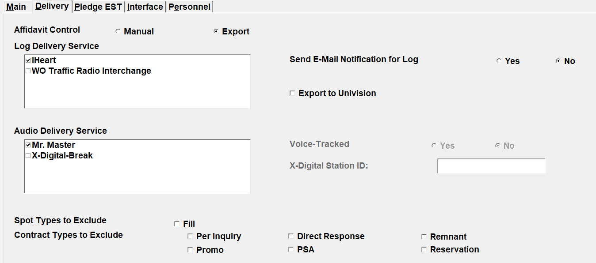
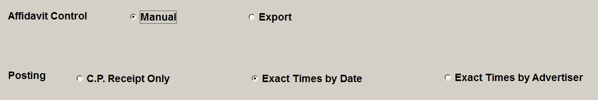
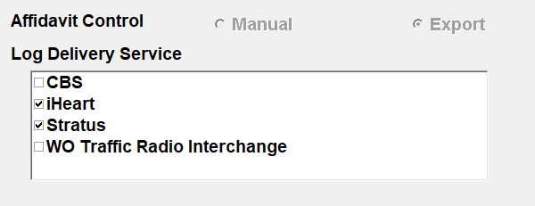
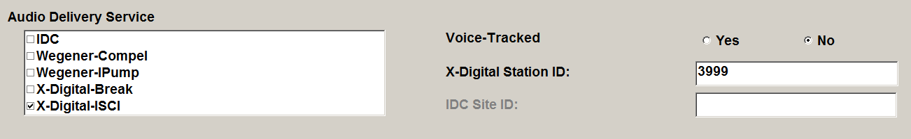
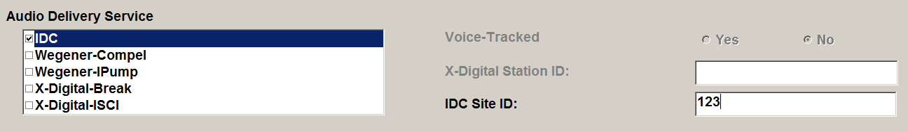
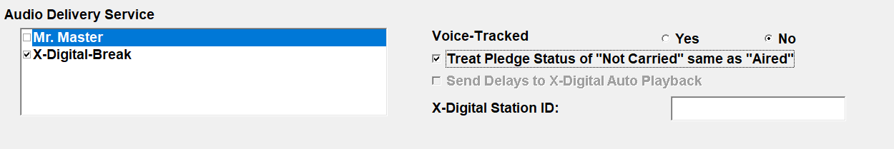
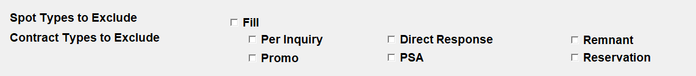

Delivery
The Delivery Tab is where you indicate how the affiliate will receive their logs, and what audio delivery service (if any) will be used.

Affidavit Control: Manual and Export
Each agreement must be set to one of the two possible Affidavit Control methods. The two methods are Manual and Export. Manual affidavits are posted manually, and Export affidavits are exported using the Counterpoint Affidavit system (or another service such as Marketron) and posted by the affiliate.
If the Affidavit Control is set to “Manual”, the affiliate will receive their logs via fax or PDF and will fill in the aired dates and times, and then send them back to the network, who will manually post the times for the affiliates.
There are three ways of posting affidavits set to the Manual Affidavit Control method: CP Receipt Only, Exact Times by Date, and Exact Times by Advertiser.

- CP Receipt Only: An affidavit can be marked as received or did not air (or outstanding). The spots themselves are not individually posted.
- Exact Times by Date: The affidavits are viewed by week with the ability to update the airing information for the individual spots.
- Exact Times by Advertiser: The affidavits are viewed by month and year with the spots grouped by advertiser when viewed on the Affiliate Affidavits screen. The spot airing information can be updated individually with this method.
If Affidavit Control is set to “Export”, the affiliates will receive their logs electronically, and aired times will be transmitted back to the network electronically, by one of several methods defined on the Delivery tab.
Export Affidavit Control Method
Log Delivery Service
The Log Delivery Service area determines how the log will be delivered to the affiliate when using the Export Affidavit Control Method. Only those services that are marked as Active on the Delivery Vendors screen will be listed here. (Note: for stations set to the setting of Web Affiliate Version 1, the following web vendors will not be shown, as these services are only compatible with Web Affiliate Version 2 and above stations: iHeart, Mr. Master, Radio Traffic, RCS, Synchronicity, and Wide Orbit.)
To enable a Log Delivery Service for the agreement, simply click in the checkbox next to the appropriate Log Delivery Service name.

The available Log Delivery Services are as follows:
- Counterpoint Affidavit: Select this option if you are exporting logs and importing affidavits using the Counterpoint Affidavit system. On version 7.0 and above, this option does not appear, as all agreements set to the affidavit control method of “Export” will automatically use the Counterpoint Affidavit system and possibly other Log Delivery Services as well.
- Stratus: Formerly called “Cumulus”. Select this option if you are exporting logs and importing your affidavits using the Stratus system.
- Marketron: Select Marketron if you are exporting your logs and importing your affidavits via the Counterpoint-Marketron “Network Connect” Interface. On version 7.0 and above, Marketron logs will also be sent to the CSI Electronic Affidavit system and be available for viewing on the station website, however, only the logs will be visible; the Submit Affidavit button will not be present.
- CBS: Used by CBS stations.
- Clear Channel: Not implemented.
- Jelli: Select this if using the Jelli service.
A maximum of two log delivery services can be selected for a single agreement (although normally only one method would be used at a time).
Select the “Export to Univision” checkbox if this agreement will be used with the Univision Scheduled Station Spots export.
E-Mail Notifications
If the Affidavit Control method is set to Export (on version 7.0 and above), or the “Affidavit” checkbox was selected, the “Send Email Notification for Log” option will be available.
- By selecting “Yes”, the affiliate will receive an email with a link to their log every time a new or revised affiliate log has been exported.
- By selecting “No”, the affiliate will not receive the notification for new and revised affiliate logs.
Audio Delivery Service
The Audio Delivery Service determines the third party audio delivery company the agreement uses to deliver its spots. The available options are IDC, Wegener-Compel, Wegener-iPump, X-Digital-Break and X-Digital-ISCI.
To enable a Audio Delivery Service for the agreement, simply click in the checkbox next to the appropriate Audio Delivery Service name.

When selecting “X-Digital-ISCI” or “X-Digital-Break”, the following additional options will become available:
- Voice-Tracked: When this is set to Yes, the station will insert the host’s voice track and spots into their programming. These spots do not get exported to X-Digital or generate an X-Digital autorization export. If exporting spots via X-Digital, set this to “No”.
- X-Digital Station ID: Enter the station’s receiver ID in this field (if needed).
If the agreement is set to “IDC”, enter the IDC Site ID in the corresponding field.

A maximum of two audio delivery services can be selected for a single agreement (although normally only one method would be used at a time).
X-Digital – Treat “Not Carried” as “Aired”
On version 7.1 and above, there’s a checkbox labeled “Treat ‘Not Carried’ the same as ‘Aired’”, to the right of the Audio Delivery Service section.

When checked on, spots from a pledge marked as “not carried” will be exported to X-Digital during the X-Digital export process as if the pledge was marked as “aired”. When not checked on, then “not carried” pledges will be bypassed like before. new option applies to all three X-Digital avail forms: Hour/Break, Hour/Break/Position, and ISCI. It also applies to exports run for “all spots” or for “regional only”. This setting only affects the X-Digital export however, so spots from “not carried” pledges will still not be sent to the web through the CSI Electronic Affidavit export, or other web spot exports.
X-Digital Record and Playback Feature
This feature allows agreements to be defined with delayed pledges that can be recorded and played back later and still have the correct regional copy that was set to air with the original spot.
There is a two-step process to activate this feature. First, the checkbox in Affiliate Site Options labeled “Support X-Digital Automatic Playback Feature” must be checked on. Second, each agreement that will be using this feature must be configured correctly. This involves checking on the option on the Agreement screen Pledge tab (on earlier versions) or the Delivery tab (on version 7.1 and above) that is labeled “Send Delays to X-Digital Auto Playback”, and correctly defining the delayed pledges as required for each agreement. (This checkbox on the Pledge tab will not be visible unless the Affiliate Site Option question “Support X-Digital Automatic Playback Feature” is checked on.) For agreements that have the “Send Delays to X-Digital Auto Playback” checked on, air delayed pledges with air play numbers greater than 1 will be sent to X-Digital as part of the X-Digital export. Air delayed pledges include pledges set to status 2, 10, and 11.
Air delayed pledges can be delayed by time, by date, or both date and time, but can only be delayed to air on or after the feed date and time, and can only be delayed up to a maximum of seven days (an X-Digital limitation). The length of the delayed pledge must also equal the length of the fed break. In other words, if the fed break start time is 4p and the end time is 4:05p, the length of the delayed pledge would have to be five minutes as the pledge length must match the break length.
When running the X-Digital export, each day that has delayed pledges must be exported. For example, if there is a Saturday only vehicle that one station has an agreement to air it delayed on Sunday, the X-Digital export must be run for both Saturday – for those stations airing it on Saturday – and Sunday, for that station airing it on Sunday. This can be done by exporting each day individually or multiple days at a time. In addition, if a fed avail that is fed in one week is pledged to air delayed to the next week, the log also must be generated for the second week before running the X-Digital export to export the spots that are delayed to the second week.
Spot and Contract Type Exclusions
At the bottom of the screen, there are checkboxes that can be selected if there are specific spot types or contract types that should be excluded from the affidavit for this agreement.

Selecting a spot or contract type here will prevent spots or contracts of that type from having affiliate spots created for it for this agreement. For example, if Fill spots are set to be excluded, when the affiliate spots are generated, such as when running an affiliate spot report or when exporting the affidavit to the CSI Electronic Affidavit website, any fill spots booked in the vehicle/week will be bypassed for this agreement, so they will not appear on the affidavit.
Spot Types to Exclude: check the “Fill” option to exclude fill spots from the affidavits for this agreement.
Contract Types to Exclude: the available options are Per Inquiry, Direct Response, Remnant, Promo, PSA, and Reservation contracts.
Note: when making a change to one of these settings, a new agreement must be entered.